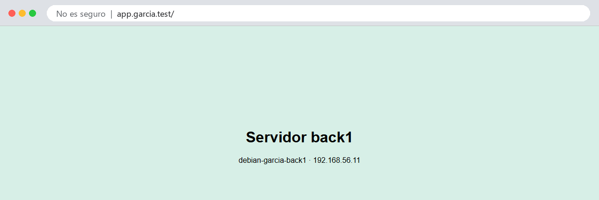

Práctica 2.4 - Proxy inverso con Nginx¶
Cuándo se hace
En el bloque 4 de la teoría del Tema 2, con la práctica 2.3 terminada.
Objetivos
Al terminar esta práctica deberás ser capaz de:
- Crear un segundo servidor clonando tu máquina virtual, sin conflictos de red ni de identidad.
- Configurar Nginx como proxy inverso delante de otro servidor web.
- Pasar al servidor de detrás la información del cliente real con cabeceras.
- Diagnosticar un
502 Bad Gateway. - Hacer que el servidor de detrás solo acepte peticiones del proxy.
1. Qué es un proxy inverso¶
Un proxy es un intermediario: recibe una petición y la hace por ti. Hay dos tipos, según a quién representa:
| Proxy (de reenvío) | Proxy inverso | |
|---|---|---|
| Está delante de… | Los clientes | Los servidores |
| Lo instala… | Una empresa o un centro, para la navegación de sus usuarios | Quien publica la web |
| El servidor ve… | La IP del proxy, no la del usuario | — |
| El cliente ve… | — | La IP del proxy, no la de los servidores |
| Ejemplos de uso | Filtrar webs, cachear, salir a Internet por un punto | HTTPS en un solo sitio, balanceo, caché, esconder los servidores de detrás |
Un proxy inverso es la cara pública de una web: el cliente solo habla con él, y él reparte el trabajo entre los servidores que tiene detrás, que nadie ve desde fuera. Es justo lo que hará tu máquina principal en esta práctica y en la siguiente.
Tu ordenador debian-tuapellido debian-tuapellido-back1
192.168.56.1 ──────► 192.168.56.10 ──────► 192.168.56.11
proxy inverso servidor de detrás
app.tuapellido.test
2. Crear el servidor de detrás: un clon ligero¶
No vas a instalar Debian otra vez: clonarás tu máquina desde la instantánea base-limpia de la práctica 1.1, que tiene Debian, tu usuario, SSH con clave y nada más.
2.1 Clonar en VirtualBox¶
- Apaga la máquina principal (
sudo poweroff). El clon arrancará con la misma IP,192.168.56.10, y no pueden estar las dos encendidas a la vez hasta que se la cambies. - En VirtualBox, selecciona tu máquina, abre Snapshots y selecciona la instantánea
base-limpia. - Clic derecho sobre ella → Clone.
- Name:
debian-tuapellido-back1. - MAC Address Policy: Generate new MAC addresses for all network adapters. Sin esto, las dos máquinas tendrían las mismas MAC y la red fallaría.
- Clone type: Linked Clone. Un clon enlazado comparte el disco de la original y solo guarda las diferencias: ocupa unos pocos cientos de MB en vez de varios GB.
- Pulsa Finish.
- Con el clon seleccionado, en Settings → System, baja la memoria a 512 MB. Un servidor sin escritorio con Nginx va sobrado, y así podrás tener tres máquinas encendidas.
2.2 Darle su propia identidad¶
Arranca solo el clon y conéctate como siempre, porque de momento tiene la IP de la principal:
Fíjate en el prompt: dice debian-tuapellido, porque es una copia exacta. Vas a cambiarle tres cosas.
El nombre (los dos comandos de la práctica 1.1):
sudo hostnamectl set-hostname debian-tuapellido-back1
sudo sed -i 's/^127\.0\.1\.1.*/127.0.1.1\tdebian-tuapellido-back1/' /etc/hosts
La IP: en /etc/network/interfaces, cambia 192.168.56.10 por 192.168.56.11:
Las claves de host SSH: el clon tiene las mismas que la principal, así que las dos máquinas tendrían la misma huella y no podrías distinguirlas. Regéneralas:
Reinicia el clon:
2.3 Conectarte a las dos¶
Arranca también la principal. Ahora tienes dos servidores:
La primera vez que entres en .11, SSH te mostrará una huella nueva: es la que acabas de generar. Compruébala como en la práctica 1.1 antes de escribir yes.
Dos terminales
Abre una pestaña de terminal para cada máquina y no las mezcles: mira siempre el prompt antes de ejecutar algo.
3. Configurar el servidor de detrás¶
En back1, instala Nginx y sustituye su página de bienvenida por una que diga quién es:
<!DOCTYPE html>
<html lang="es">
<head><meta charset="utf-8"><title>back1</title></head>
<body style="font-family:sans-serif;background:#d7efe7;text-align:center;padding-top:15%">
<h1>Servidor back1</h1>
<p>debian-tuapellido-back1 · 192.168.56.11</p>
</body>
</html>
El sitio por defecto de Nginx sirve index.html antes que su propia página de bienvenida, así que no hace falta tocar la configuración. Compruébalo desde tu ordenador entrando en http://192.168.56.11.
4. Configurar el proxy inverso¶
En la principal, crea un sitio nuevo:
server {
listen 80;
listen [::]:80;
server_name app.garcia.test;
access_log /var/log/nginx/app.access.log;
error_log /var/log/nginx/app.error.log;
location / {
proxy_pass http://192.168.56.11; # (1)!
proxy_set_header Host $host; # (2)!
proxy_set_header X-Real-IP $remote_addr; # (3)!
proxy_set_header X-Forwarded-For $proxy_add_x_forwarded_for; # (4)!
proxy_set_header X-Forwarded-Proto $scheme; # (5)!
}
}
- Adónde reenviar cada petición. No hay
root: este sitio no sirve ningún fichero, solo hace de intermediario. - Pasa al de detrás el nombre que pidió el cliente. Sin esto, el de detrás recibiría
Host: 192.168.56.11. - La IP del cliente real. El de detrás solo ve llegar conexiones del proxy.
- La cadena de IP por las que ha pasado la petición, por si hay varios proxys.
- Si el cliente llegó por
httpo porhttps.
Actívalo, comprueba y recarga (como en la práctica 2.1), y añade el nombre a tu fichero hosts apuntando al proxy, la .10:
Entra en http://app.garcia.test: verás la página de back1, aunque tu ordenador solo ha hablado con la .10.

Si ves la página por defecto de Nginx
Justo después de un reload, la primera petición puede atenderla todavía la configuración anterior. Recarga otra vez.
5. Seguir la petición¶
En los registros¶
Haz una petición y mira el registro de las dos máquinas:
sudo tail -n 1 /var/log/nginx/app.access.log # en la principal
sudo tail -n 1 /var/log/nginx/access.log # en back1
192.168.56.1 - - [05/Oct/2026:00:10:49 +0200] "GET / HTTP/1.1" 200 264 "-" "curl/8.21.0" ← principal
192.168.56.10 - - [05/Oct/2026:00:10:49 +0200] "GET / HTTP/1.0" 200 264 "-" "curl/8.21.0" ← back1
La principal ve a tu ordenador (192.168.56.1). back1 ve al proxy (192.168.56.10): para él, el cliente es el proxy. Si back1 tuviera que saber quién es el usuario de verdad (para estadísticas, para bloquear una IP…), estaría perdido.
Fíjate también en la versión: tu ordenador habla con el proxy en HTTP/1.1, pero el proxy habla con back1 en HTTP/1.0, que es lo que usa Nginx por defecto para reenviar.
La IP real en el de detrás¶
Para eso le pasas X-Real-IP. En back1, dile a Nginx que confíe en esa cabecera solo si viene del proxy. Edita el sitio por defecto y añade estas dos líneas dentro del bloque server:
Recarga Nginx en back1, repite la petición y vuelve a mirar su registro: ahora aparece 192.168.56.1, la IP real.
Solo del proxy
set_real_ip_from es imprescindible: si back1 creyera la cabecera venga de quien venga, cualquiera podría mandar X-Real-IP: 1.2.3.4 y hacerse pasar por otra IP.
En las cabeceras de la respuesta¶
Que cada máquina firme la respuesta. En back1, dentro del location / del sitio por defecto:
Y en la principal, dentro del location / de app.garcia.test:
$hostname es el nombre de la máquina. Recarga las dos y pide solo las cabeceras desde tu ordenador:
HTTP/1.1 200 OK
Server: nginx
Content-Type: text/html
Content-Length: 264
X-Servidor: debian-garcia-back1
X-Proxy: debian-garcia
La respuesta lleva las dos firmas: ha salido de back1 y ha pasado por el proxy.
6. Cuando el de detrás falla: 502¶
En back1, para Nginx:
Recarga http://app.garcia.test: el proxy responde 502 Bad Gateway. El proxy funciona, pero no consigue respuesta del servidor de detrás. Mira por qué en la principal:
2026/10/05 00:11:11 [error] 949#949: *6 connect() failed (111: Connection refused) while connecting to upstream, client: 192.168.56.1, server: app.garcia.test, request: "HEAD / HTTP/1.1", upstream: "http://192.168.56.11:80/", host: "app.garcia.test"
Connection refused: back1 está encendida, pero nadie escucha en su puerto 80. Vuelve a arrancar Nginx en back1 (sudo systemctl start nginx).
Lo verás mucho
En el Tema 3 pondrás Nginx delante de servidores de aplicaciones. Cuando una aplicación se cae, lo que ve el usuario es este 502, y lo primero que hay que mirar es el registro de errores del proxy.
7. Que nadie se salte el proxy¶
Ahora mismo back1 responde a cualquiera: entra en http://192.168.56.11 desde tu navegador. Un servidor de detrás debería aceptar solo al proxy.
Lo primero que se te ocurrirá es lo de la práctica 2.3: allow 192.168.56.10; y deny all;. No funciona, y es interesante ver por qué: con real_ip_header, para Nginx el cliente ya no es el proxy sino tu ordenador (192.168.56.1), así que allow lo rechaza. Le has pedido que se crea la IP que le pasa el proxy, y se la cree para todo.
La IP de quien se conecta de verdad sigue disponible en otra variable, $realip_remote_addr. En back1, añade dentro del bloque server, debajo de las líneas de la IP real:
Si la conexión no viene del proxy, responde 403 sin mirar nada más. Recarga Nginx en back1 y prueba las dos rutas desde tu ordenador:
curl.exe -s -o NUL -w "%{http_code}
" http://192.168.56.11
curl.exe -s -o NUL -w "%{http_code}
" http://app.garcia.test
Directamente, 403. A través del proxy, 200. Y el registro de back1 sigue mostrando la IP real en las dos:
192.168.56.1 - - [05/Oct/2026:00:11:40 +0200] "GET / HTTP/1.1" 403 146 "-" "curl/8.21.0"
192.168.56.1 - - [05/Oct/2026:00:11:40 +0200] "GET / HTTP/1.0" 200 264 "-" "curl/8.21.0"
La primera llegó directa (HTTP/1.1) y fue rechazada; la segunda llegó por el proxy (HTTP/1.0) y se sirvió.
La configuración completa del sitio por defecto de back1 queda así (sin comentarios):
server {
listen 80 default_server;
listen [::]:80 default_server;
root /var/www/html;
index index.html index.htm index.nginx-debian.html;
server_name _;
set_real_ip_from 192.168.56.10;
real_ip_header X-Real-IP;
if ($realip_remote_addr != 192.168.56.10) {
return 403;
}
location / {
try_files $uri $uri/ =404;
add_header X-Servidor $hostname;
}
}
En el mundo real
Esto se suele resolver un paso antes, con un cortafuegos que solo deja llegar al puerto 80 de los servidores de detrás las conexiones del proxy. Así ni siquiera llegan a Nginx.
8. Haz las instantáneas¶
Apaga las dos máquinas y toma una instantánea de cada una: p2.4-proxy en la principal y back1-listo en back1.
Cuestiones finales¶
Cuestión 1
¿Qué diferencia hay entre un proxy de reenvío y un proxy inverso? Pon un ejemplo de cada uno que hayas usado o visto, aunque no lo supieras.
Cuestión 2
¿Por qué hay que apagar la máquina principal antes de arrancar el clon por primera vez? ¿Qué tres cosas le has cambiado al clon y por qué cada una?
Cuestión 3
Sin set_real_ip_from, ¿qué IP aparecería en el registro de back1? ¿Y si pusieras real_ip_header pero no set_real_ip_from? ¿Qué riesgo habría?
Cuestión 4
Explica qué significa un 502 Bad Gateway y en qué se diferencia de un 404 y de un 503. ¿En qué máquina buscas la causa?
Cuestión 5
¿Por qué conviene que back1 solo acepte peticiones del proxy? ¿Por qué allow 192.168.56.10 no sirve cuando usas real_ip_header, y qué diferencia hay entre $remote_addr y $realip_remote_addr?
Entrega¶
Igual que en las prácticas anteriores: documento de evidencias (40 %) y demostración en clase (60 %).
Parte 1 — Documento de evidencias (40 %)¶
Un PDF llamado P2.4-Apellido-Nombre.pdf con portada, las evidencias (en texto, con comando y prompt) y las respuestas a las cuestiones.
| # | Qué hay que demostrar | Dónde | Comando cuya salida se pega |
|---|---|---|---|
| 1 | back1 tiene su propio nombre e IP |
back1 |
hostnamectl e ip -br a |
| 2 | back1 tiene sus propias claves de host |
back1 |
ssh-keygen -lf /etc/ssh/ssh_host_ed25519_key.pub, comparada con la de la principal |
| 3 | La configuración del proxy | Principal | cat /etc/nginx/sites-available/app.tuapellido.test |
| 4 | La configuración de back1 (IP real, cabecera y restricción al proxy) |
back1 |
grep -v '^\s*#' /etc/nginx/sites-available/default |
| 5 | La respuesta pasa por las dos máquinas | Tu ordenador | curl.exe -I http://app.tuapellido.test |
| 6 | Los dos registros de la misma petición | Las dos | La última línea de app.access.log (principal) y de access.log (back1) |
| 7 | El 502 y su causa |
Principal | La última línea de app.error.log con Nginx parado en back1 |
| 8 | back1 solo acepta al proxy |
Tu ordenador | Los dos curl.exe del apartado 7 |
| 9 | Las máquinas en VirtualBox | Tu ordenador | Captura de VirtualBox con las dos máquinas y sus instantáneas |
Parte 2 — Demostración en clase (60 %)¶
Mini entrevista individual en la mesa del profesor, con las dos máquinas encendidas: muestras app.tuapellido.test en el navegador, haces la tarea que se te pida (por ejemplo, provocar y explicar un 502) y explicas una decisión o un concepto.
Criterios de evaluación¶
| Parte | Criterio | Peso |
|---|---|---|
| Documento | Las nueve evidencias están completas, en texto (salvo la captura) y explicadas | 25 % |
| Documento | Las cinco cuestiones están respondidas con corrección y criterio propio | 15 % |
| Demostración | app.tuapellido.test llega a back1 a través del proxy, y back1 no acepta conexiones directas |
20 % |
| Demostración | Realizas la tarea que se te pide y explicas lo que haces | 20 % |
| Demostración | Explicas una decisión o un concepto con tus palabras | 20 % |
Antes de entregar, comprueba que…¶
- ☐
back1se llamadebian-tuapellido-back1, tiene la IP.11, 512 MB y su propia huella SSH. - ☐
http://app.tuapellido.testmuestra la página deback1, con las cabecerasX-ServidoryX-Proxy. - ☐ El registro de
back1muestra la IP de tu ordenador, no la del proxy. - ☐
http://192.168.56.11devuelve403desde tu ordenador. - ☐ Existen las instantáneas
p2.4-proxyyback1-listo. - ☐ El archivo se llama
P2.4-Apellido-Nombre.pdf.